Objectives
In this Exercise you will learn how to setup Monitor to receive data from a CSV file that contains solar panel data and send the data through a gateway. The gateway will create the devices in Monitor.
- Create a device type and setup metrics in Monitor
- Create a gateway in IoT to send events to the device type in Monitor
- Configure Node-RED flow
- Run Node-RED flow
- Verify the devices and data are in Monitor
Create a device type and setup metrics in Monitor
Tip
If you have already done the previous exercise, then skip to Create a gateway in IoT and register a device and reuse the device type setup.
Create a device type
- Go to Setup in Monitor
- Go to Devices tab
- Click on + button to create a device type
- Choose Basic template
- Next
- Enter a Device type name, e.g. XX_SolarPanel (replace XX with your initials).
Take note of the name you give as you will need this in the Node-RED flow config - Create
Create Metrics in the device type
- Under Metrics section click Add metric
- Click Add metric
a. Enter AC_POWER for Metric
b. Enter AC_POWER for Display name
c. Enter event_1 for Event
d. Choose NUMBER for Type
e. Enter Watt for Unit - Click Add metric
a. Enter DC_POWER for Metric
b. Enter DC_POWER for Display name
c. Choose event_1 for Event
d. Choose NUMBER for Type
e. Enter Watt for Unit - Click Add metric
a. Enter DAILY_YIELD for Metric
b. Enter DAILY_YIELD for Display name
c. Choose event_1 for Event
d. Choose NUMBER for Type - Click Add metric
a. Enter TOTAL_YIELD for Metric
b. Enter TOTAL_YIELD for Display name
c. Choose event_1 for Event
d. Choose NUMBER for Type - Click Add metric
a. Enter EVT_TIMESTAMP for Metric
b. Enter EVT_TIMESTAMP for Display name
c. Choose event_1 for Event
d. Choose TIMESTAMP for Type - Click Add
- Apply checkmark in the box to
Use this as the default timestamp - The metrics should look like this:
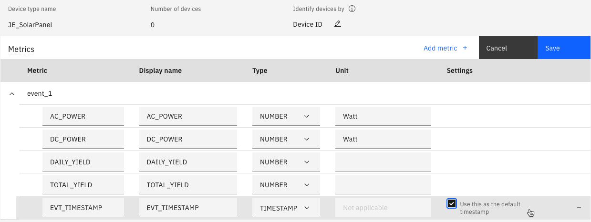 - Click Save
Create a gateway in IoT and register a device
- Click the AppSwitcher in the top right corner and choose IoT 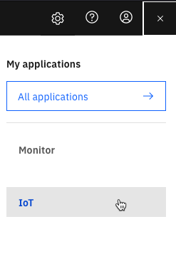
- Click on Device Types
- Click on Add Device Type
- Click on Type Gateway
- Enter a name for the gateway type, e.g. XX_SolarPanel_GW (replace XX with your initials).
Take note of the name you give as you will need this in the Node-RED flow config - Click Next
- Click Finish
- Click Register Devices 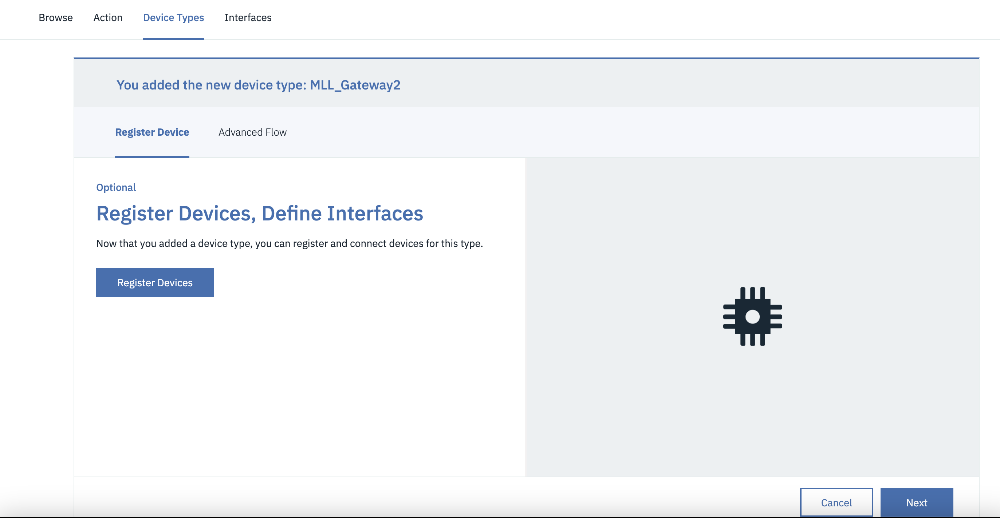
- Enter a name for the gateway device, e.g. XX_SolarPanel_GW01 (replace XX with your initials).
Note: This is not the DEVICEID in your CSV file - Click Next 4 times
- In Authenticaton Token enter Pasword1! and click Next

- Click Finish 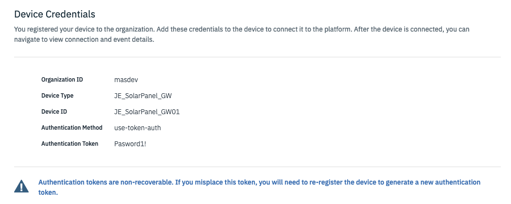
Import Node-RED flow to import the CSV
Tip
If you have already done the previous exercise, then skip to next step and use the Node-RED script already imported.
- Download the flow, if you have completed the previous device exercise skip these steps
- Launch Node-RED
- Click on the burger menu and choose Import
- Click on select a file to import
- Choose the file downloaded in step 1.
- Click Import
Configure Node-RED flow "CSV to MQTT to Monitor through a gateway"
Configure Node-RED flow for your MAS Monitor environment
Collect the following (or skip if done in previous exercise):
* name of the device type created above
* Messaging hostname which should look like this
[tenant/workspace].messaging.iot.[domain]
e.g. masdev.messaging.iot.monitordemo2.ibmmam.com
Update the device type
- Double click on the "Set Flow Data"
functionnode in the Initializtion section - Change the deviceType to the device type you created previously,
e.g. XX_SolarPanel (replace XX with your initials). - Click Done
Update the Client ID
- Double click on the purple
mqtt outnode namedSend MQTT event to a gateway in MAS Monitor - Click on the pencil icon next to Server
- In the Server box replace with your Messaging hostname
- Click on the pencil icon next to TLS configuration
- In the Server Name box replace with your Messaging hostname
- Uncheck
Verify server certificateand click Update - The Client ID for a gateway looks like this:
g:<tenant>:<device type>:<device ID> - In the Client ID field replace masdev with your tenant/workspace name if it is not the same
- In the Client ID field replace XX_SolarPanel_GW with your gateway device type created above
- In the Client ID field replace XX_SolarPanel_GW01 with the device Id of your gateway created above
- Click on the Security tab, write
use-token-authas the username
and writePasword1!as the Password - Click Update
- Click Done
- Click Deploy in the top right corner
- You should now see a green dot and
connectedbelow themqtt outnode
if all credentials were entered correctly:
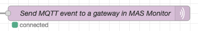
Run the Node-RED flow for a gateway
- Download multiple_solar_panels.csv from github
- Click on the down arrow in the upper right corner in Node-RED and choose Dashboard
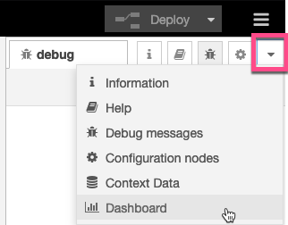 - Click on the launch arrow
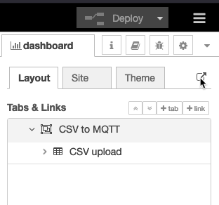 - Click on Choose File or Browse under "Upload CSV with multiple devices" and select the recently downloadet CSV file.

- Select the
multiple_solar_panels.csvfile and click the right arrow play button - Go back to the Node-RED flow window
- Under the light purple
delaynode it shows the amount of messages left to send to Monitor - Under the green
debugProgress node it shows the amount of messages that have been sent to Monitor - All the data is ingested into Monitor once the number under the light purple
delaynode
shows 0 but you can go ahead to the next step to verify data is going into Monitor.
It will take approx. 11 minutes.
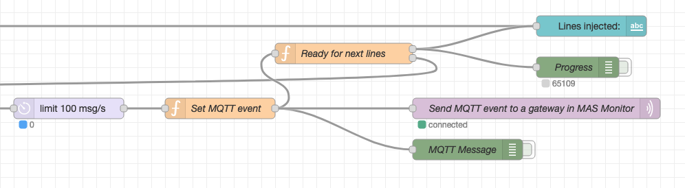
Verify the devices and data in Monitor
- Go to Setup in Monitor
- Click on the Device Type created earlier in the lab
- See that 21 (+1 from previous exercise) devices were created in Monitor under the device type 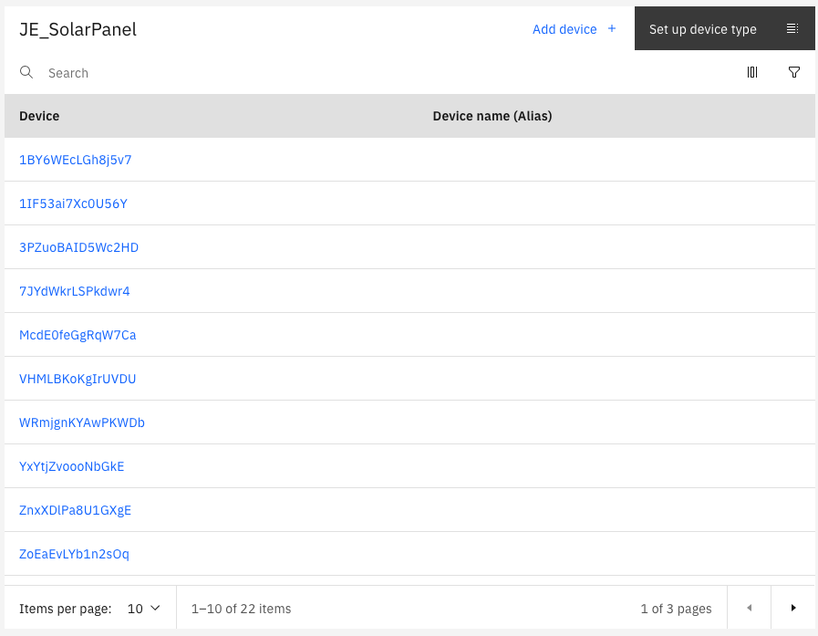
- Click on the black button "Set up device type"
- On the left side open Metric and then select DAILY_YIELD
- Click on Data table to see the values of that metric and notice the different Device ID's
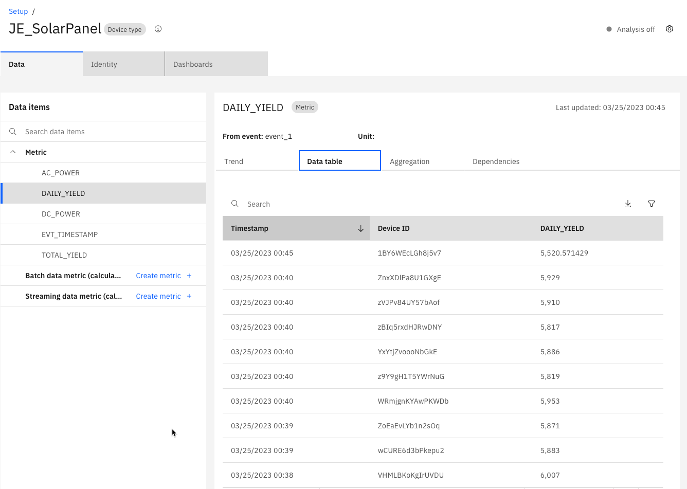
Congratulations! You have ingested data from a CSV file into Monitor for several devices through a gateway.
Now you can explore creating calculated data metrics and dashboards in Monitor.
Which could be something like this:
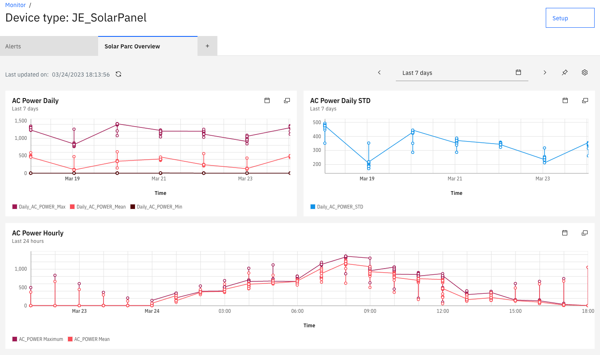
Attention
Please archive and delete your device type when it is no longer being used.